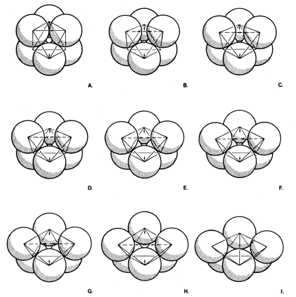

|  |
| Fig. 936.12 Octahedron as Conservation and Annihilation Model: If we think of the octahedron as defined by the interconnections of six closest-packed spheres, gravitational pull can make one of the four equatorial vectors disengage from its two adjacent equatorial vertexes to rotate 90 degrees and rejoin the north and south vertexes in the transformation completed as at I. (See color plate 6.) |